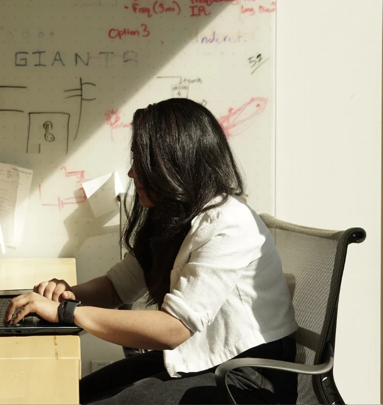
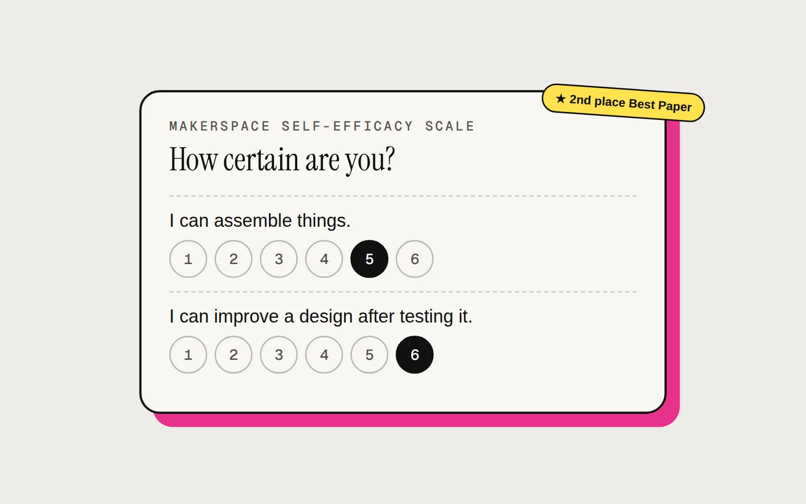
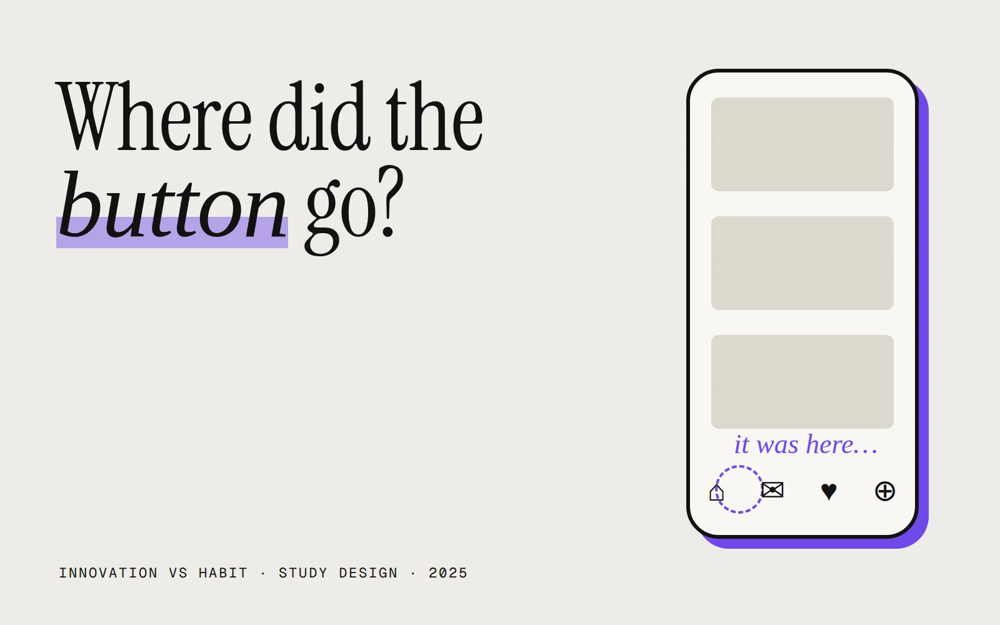
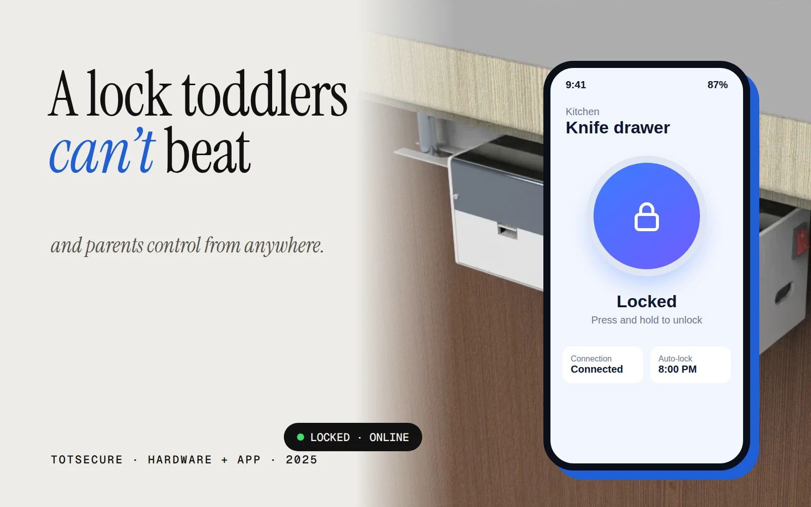
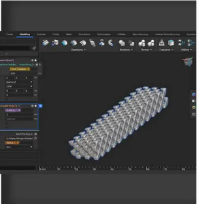
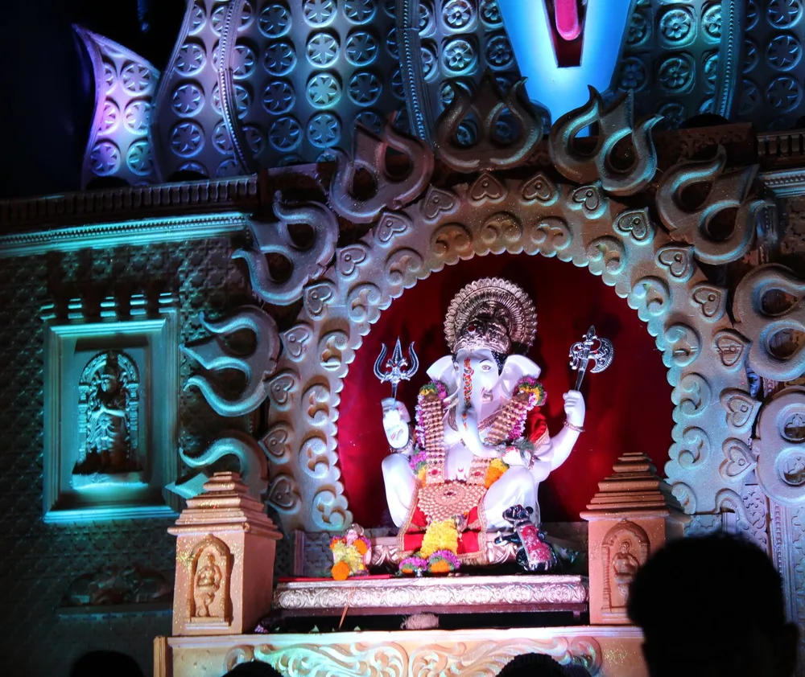
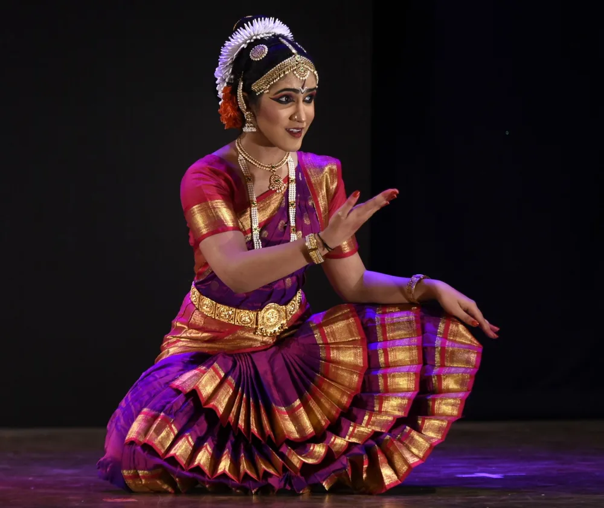
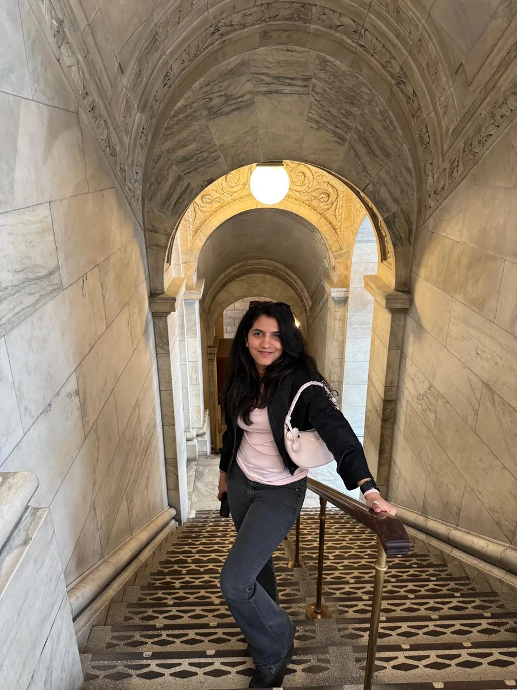
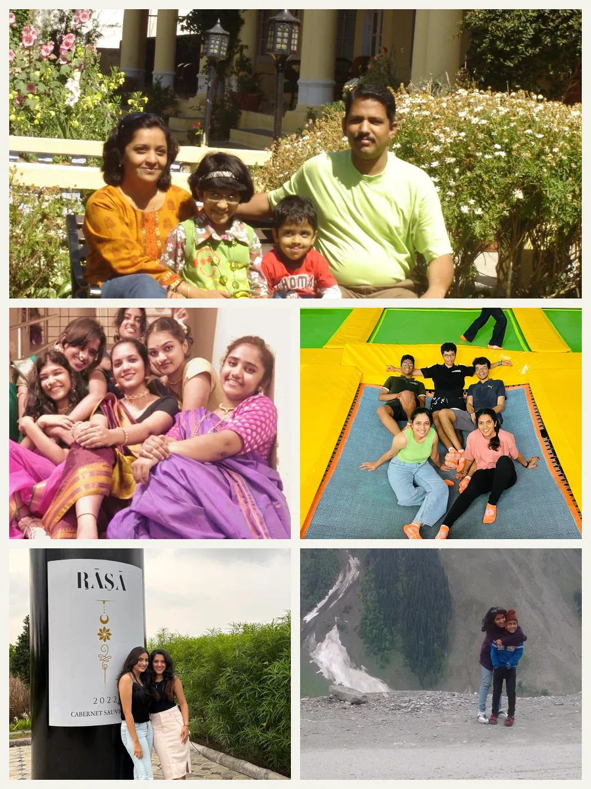
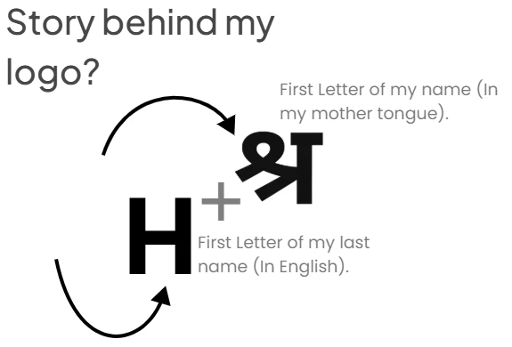

UX Researcher & Engineering Designer. Professional question-asker.

Work.
Four studies, each opening with its impact and the methods behind it.
-
01
How students' backgrounds affect makerspacesMakerspace Self-Efficacy Scale (MSES) · thesis
A validated 17-item scale on 1,910 students. 2nd place Best Paper.
94%items validated by CFA2024–26

-
02
Innovation vs habitwhat does a moved button cost users?
How much a moved button slows people down, and why.
5tasks · 2 UI versions2025

-
03
Totsecurea child lock parents control remotely
A lock adults open in a second and toddlers can't, run from an app.
55%preventable injuries targeted2025

-
04
Can lattices make products quieter?a controlled acoustics experiment
Six 3D-printed lattices, one question: which makes it quietest?
−11.4 dBbest lattice vs control2025

Where I've learned by doing.
From Pune to Penn State.
2024 – 2026M.S., Engineering Design InnovationThe Pennsylvania State University
- Thesis research on makerspace self-efficacy (MSES).
- Two ASME IDETC-CIE papers; CERS 2026 presenter.
2020 – 2024B.Des., Industrial DesignMIT Institute of Design, Pune
- Capstone at Therefore Design (Calidus, for LabIndia).
- Featured on Packaging of the World (Feb 2023) for “Gingko” sushi take-away packaging.
Nov 2024 – nowGraduate Student ResearcherThe Pennsylvania State University
- Designed and ran a two-round survey of 1,910 first-year engineering students.
- Validated 16 of 17 items (94%) with confirmatory factor analysis; used IRT to isolate 2 background factors.
- Lead author of the 17-item Makerspace Self-Efficacy Scale (MSES): 2nd place Best Paper at ASME IDETC-CIE 2026, nominated for ASME's special edition journal.
Aug 2024 – nowTeaching Assistant, EDSGN 100The Pennsylvania State University
- Taught design process, prototyping and CAD (Fusion 360, SolidWorks) across 13 sections over 6 semesters.
- ~520+ first-year engineering students; lectures, office hours and project mentoring.
Jan – Jun 2024Product & Industrial Design InternTherefore Design, Pune
- B.Des capstone: redesigned the “Calidus” stability chamber for LabIndia.
- On-site interviews with factory workers and repair technicians; benchmarked 10+ products.
- Cut assembly from 15 steps to 5 (67%); 970 mm footprint vs ~1,300 mm; redesigned a 6-screen HMI.
May – Jun 2023Product Design InternGodrej & Boyce · Interio Seating
- Benchmarked 17 gaming chairs across 7 brands.
- Survey of 90 respondents plus 10 interviews: 93.6% had no gaming chair.
- Synthesised 4 personas and 3 design briefs across ₹8,000–₹25,000 tiers.
Aug – Sep 2022Product Design InternGuddee (startup)
- Designed products that bring traditional Indian artisan crafts into contemporary daily life.
Jun – Jul 2022Packaging Design InternChef at Home (startup)
- Designed launch packaging for “Zangbox”, cook-it-yourself meal kits curated with five-star hotel chefs.
What my research taught me.
Real findings from my projects. Drag them, then hit Cluster.
Hi, I'm Shreya.





Click to shuffle · drag the stickers
“Ever since childhood, stories have held me in their grip. My storytelling grew from daydreaming into writing, dance and doodling, and eventually into prototypes, designs and research.”
I trained as an industrial designer (B.Des, MIT Institute of Design, Pune) and spent five internships making products, the kind that end up in usability reports. That's why I moved toward research.
Now I'm finishing an M.S. in Engineering Design at Penn State ('26), studying how people's backgrounds shape their confidence and decisions. I've taught 520+ first-year engineers to prototype and presented at ASME IDETC-CIE twice.
Off the clock: Bharatanatyam (arangetram and Visharad) and photography. Shuffle the stack to see them.
Looking for UX Researcher / UX Designer roles where research and making sit at the same table.
Research
- Survey & scale design
- Interviews & contextual inquiry
- CFA · item response theory
- Task & journey analysis
- Personas & design briefs
- Competitive benchmarking
Design
- Figma · Framer
- Interaction & HMI design
- Rhino · Fusion 360
- KeyShot · Blender
- Photoshop · Illustrator
- Tableau
Also
- Prototyping & 3D printing
- ESP32 electronics
- English · Hindi · Marathi
- German (basic)
Design Jenga: building blocks of design.
Every real block is a step I use: hover or tap it to see where I used it. Some blocks only look like process: pull those out without toppling the tower.
Hover a block · tap to pull · drag to spin
What's on your mind?
Let's discuss design, books, opportunities and conspiracy theories.